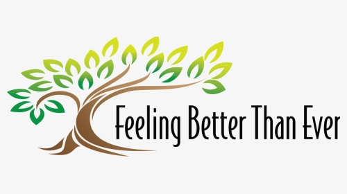

Images
The three common formats are JPG, PNG, and GIF.
- JPG:This was developed by Joint Photographic Experts Group to be standard for professional photographers. JPGs have become the standard image of the internet because they can be compressed so much. JPGs are lossy by nature so it is not an ideal way to store art files. It is best suited for photographs; photorealistic images with a lot of colors
- PNG:Stands for Portable Network Graphics. PNG is an excellent filetype for internet graphics, as it supports transparency in browsers.The non-lossy nature of 24-bit PNG is ideal for screenshot software, allowing pixel for pixel reproduction of your desktop environment.It is best suited for Line art; images with text; transparent images
- GIF:Stands for Graphics Interchange Format. This is a lossless, has support for transparency, it supports animations, limiting every frame to 256 preselected colors.Gif is limited ot 8 bit color, so conversion to 8-bit color distorts many images. GIF is used when there is a large areas of uniform color and the total number of colors is smaller than 256.
JPG

Source: JPG image
PNG
Source: PNG image
GIF
Source: GIF image
Discussion
- What is alternate text?
Alternative text provides a textual alternative to non-text content in web pages. Adding alternative text is a principle of web accessibility. Visually impaired users using screen readers will be read an alt attribute to better understand an on-page image. Alt tags will be displayed in place of an image if an image file cannot be loaded.
- Why is alternate text important to web accessibility?
Making the web accessible to all should be the goal for all web developers. Alternate text is one such piece to help visually impared users, older adults, and people who have difficulty identifying or understanding an image. It is read by screen readers in place of images allowing the content and function of the image to be accessible to those with visual or certain cognitive disabilities. It is displayed in place of the image in browsers if the image file is not loaded or when the user has chosen not to view images. It provides a semantic meaning and description to images which can be read by search engines or be used to later determine the content of the image from page context alone.
Its original (and still primary) purpose is to describe images to visitors who are unable to see them. This includes screen readers and browsers that block images, but it also includes users who are sight-impaired or otherwise unable to visually identify an image. Including alt text with your images ensures all users, regardless of visual ability, can appreciate the content on your site.
- What is null alt text and when would you use it?
A null alt text is written as alt=”” with no space between the set of quotes. It is used when an image is used purely for decoration and/or does not have a pupose, information or function.
- What is the WCAG Success Criteria that addresses the accessibility of non-text content, such as images? Ex: Guideline 4.1.3 (Level AA)
In content implemented using markup languages, status messages can be programmatically determined through role or properties such that they can be presented to the user by assistive technologies without receiving focus.
Colors on the Internet
- Why is color contrast important to web accessibility?
It is important to have color contrast to make the web accessible to people with vision deficienies. This includes but is not limited to blindness, color blindness, low vision. Also colors used to convey information on diagrams, maps, and other types of images must be distinguishable. - What is the WCAG Success Criteria that addresses the use of color? Ex: Guideline 4.1.3 (Level AA)
The visual presentation of text and images of text has a contrast ratio of at least 4.5:1, except for the following: Large Text: Large-scale text and images of large-scale text have a contrast ratio of at least 3:1; Incidental: Text or images of text that are part of an inactive user interface component, that are pure decoration, that are not visible to anyone, or that are part of a picture that contains significant other visual content, have no contrast requirement. Logotypes: Text that is part of a logo or brand name has no contrast requirement. WCAG requires "at least 4.5:1" contrast, so you cannot round a contrast ratio up to 4.5:1. For example, #777777 is a commonly-used shade of gray with a 4.48:1 contrast ratio. It does not meet the WCAG contrast threshold. - How can you check the color contrast between text and background colors on a web page?
You can check the color contrast between text and background colors on the web page by using color checker
Examples of Color
Text and background with good color contrasts
Text and background with bad color contrasts